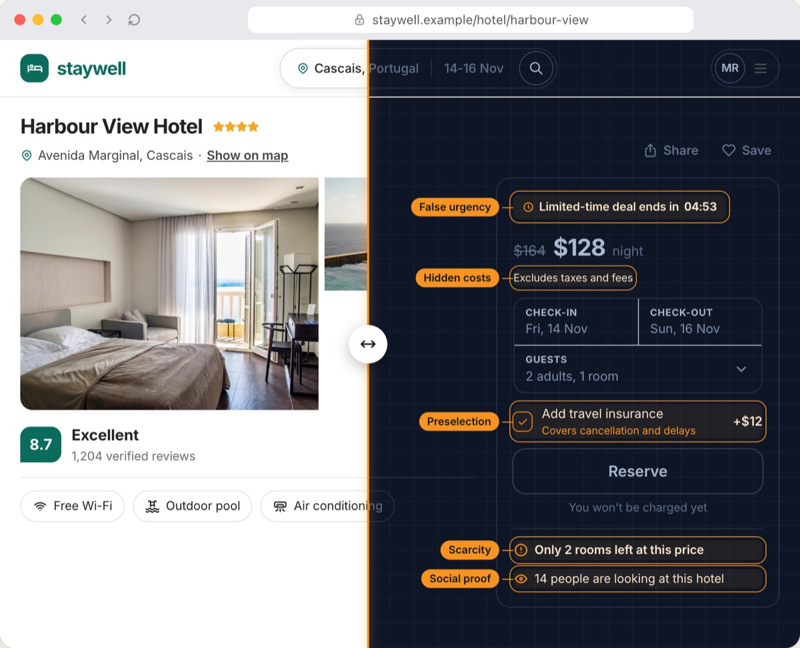

1 · Research: the current study leads, earlier work becomes a list
Research
Current study · Aug 2026 to present
Dark patterns in AI-generated interfaces
Freelancers in Bangladesh now hand clients interfaces that an AI tool drafted. We study how they spot the manipulative parts, and what they change or send anyway.
- 13 interviews so far
- 5 AI-made interfaces, 10 patterns
- Manuscript in preparation
 With Dr. Novia Nurain, BUET
With Dr. Novia Nurain, BUET

Earlier research
Dec 2025UX-centred product management at BeeBooksCase study of an accounting product for non-accountant SME owners 2024 to 2025What Bangladeshi viewers want from ChorkiAudience research with IBA and Prothom Alo Feb 2025Personality, family and peers in high-value purchasesSurvey of 271, ordinal logistic regression May 2024Signals of nutritionInterviews, then a survey of 2022 · Work: a quiet timeline, below research
Work
- May 2026 to presentProduct Lead
 Advanced AI Lab Limited
Advanced AI Lab LimitedGo-to-market for a computer-vision inspection product for garment factories.
- Sep 2025 to May 2026Product Manager
 Pridesys IT Ltd.
Pridesys IT Ltd.UI/UX strategy for Farmers Card; end-to-end development of BeeBooks.
- Feb to Apr 2025Data Analyst and AI EvaluatorZelf AI
- Jan 2023 to presentDigital Strategy Consultant
 Vera Ink BD
Vera Ink BD
3 · Footer: the same card, polished (try Copy email)